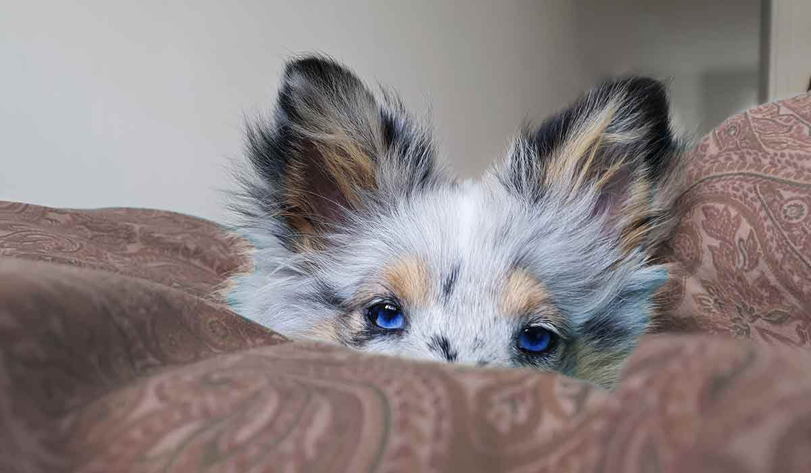

Moment 3 - laboration
Labben består i att framställa bilder som ingår i en webbsida. Webbsidan är färdig och bilder enligt vissa mått och instruktioner ska göras.
Uppgift 5 - Porträtt
Du ska ta en bild på dig själv och beskära till en kvadrat. Bilden ska vara frilagd och vara 400x400 pixlar stor och sparas som PNG 24.
Uppgiften
Uppgiften ingår i kursen Digital bildbehandling för webb.
Stilen på det grafisk utseendet, dvs färger och eventuella teckensnitt i själva bilderna, bestäms av dig. Bildernas namn och mått är förutbestämda enligt nedan, när bilderna döps rätt och har rätt filformat kommer de automatisk hamna på webbsidan när du lagt dem i rätt mapp. I vissa fall kan valfritt mått på bilderna användas, annars står måtten i instruktionen.
Du ska även kortfattat beskriva hur du gått tillväga för att lösa varje deluppgift. Behöver inte vara särskilt ingående, en till max två A4-sidor är lämpligt.
Uppgift 7 - färgstick
Välj en egen bild där du ändrar färgbalansen i bilden. Det kan vara en del av bilden eller hela du ändrar på. Det du ska lägga in är en före-bild och en bild efter du ändrat färgbalansen.
Filfromat: jpg
Bildstorlek: 1200 x 750 pixlar
Filnamn: fargstick.jpg, fargstick_fore.jpg
{kind=link}
Efter:
{kind=link}
Uppgift 8 - Handkolorering och retusch
I denna uppgift ska du retuschera den svartvita bilden handkolorering.jpg och sen också färga olika delar i bilden så att det ser ut som ett färgfoto.
Filfromat: jpg
Bildstorlek: 1200 x 845 pixlar
Filnamn: handkolorering.jpg
{kind=link}
Uppgift 12 - reklambanner GIF
Du ska skapa en reklambanner för undersidan för webbdesign-sidan här i labb 3. Bannern ska vara en animerad gif-bild.
Filformat: gif
Bildstorlek: 250 x 360 pixlar
Filnamn: banner.gif